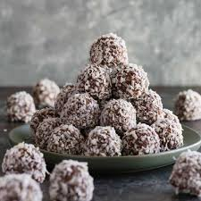
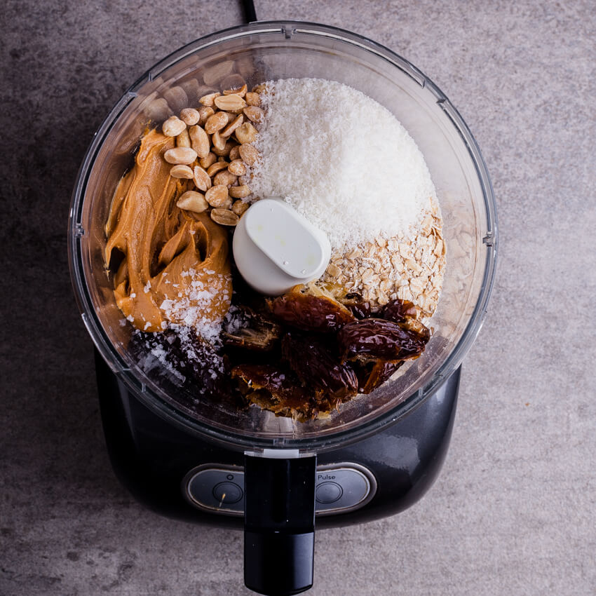

Energizing Oat Balls

Why you will love them:
These oat balls are the perfect snack! Have them for dessert or a midday craving.
So quick and easy to make, these nutrient packed bites are great for meal prep as they are best served chilled.
They are also easily customizable so you can adjust how ever you'd like it
What you will need:

- 1 1/4 cup rolled oats
- 1/4 cup almond butter
- 1/3 cup maple syrup
- 1 tsp cinnamon
- 1/4 cup semi sweet chocolate chips
- 1 tbsp chia seeds
How it's done:
- Mix all ingredeints together
- Let the better cool in refrigerator for 10 min. This will help when shaping the balls.
- Once the oats are cool, being taking peices from the batter and begin creating a ball. This part does get quite messy, just a heads up.
- Set the ball aside and contuine on with the rest of the batter.
- Allow the oat balls to refrigorate for 2 hours before serving.
- Option to customize with the addition of coconut flakes, cranberries, nuts, or dip them in melted chocolate